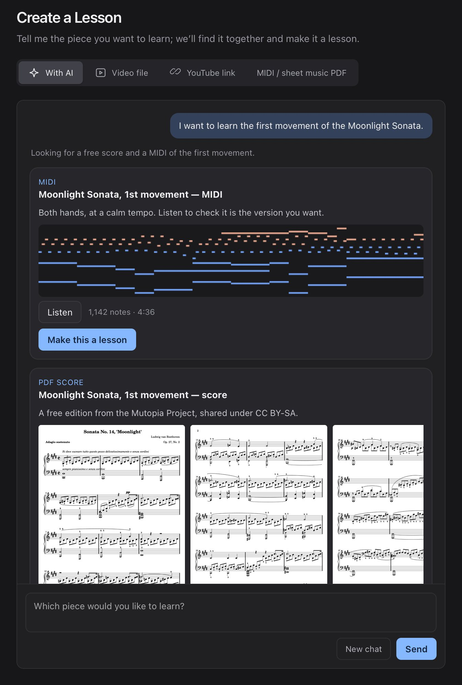

AI-POWERED LESSON CREATION
From a sentence
to a lesson.
Tell rach3 what you want to play. An AI agent searches the web for free MIDI files, sheet music and YouTube videos, lets you listen and look first, and turns the one you pick into a lesson.
- 01Say it your way.A title, a composer, a film song. “Something easy for my left hand” works too.
- 02Listen and look first.Play the MIDI, flip through and zoom into the score, watch the video right in the chat. Not quite it? Ask for another.
- 03One click to a lesson.Pick the one you want. It joins your lessons with the score and falling notes.
On Mac and Windows 11. Sign in with your ChatGPT account; it uses your ChatGPT plan. Music found on the web keeps its own license.
